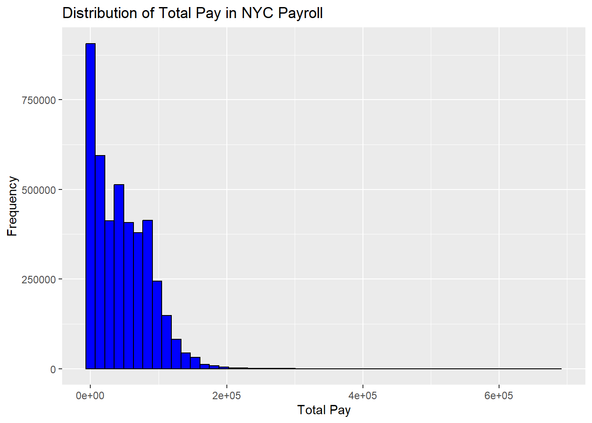

# Load necessary packages
library(tidyverse)
library(readr)
# Define the URL of the dataset
nyc_payroll_url <- "https://data.cityofnewyork.us/api/views/k397-673e/rows.csv?accessType=DOWNLOAD"
# Define the local file name
local_file <- "NYC_Payroll_Data.csv"
# Check if file exists, if not, download it
if (!file.exists(local_file)) {
download.file(nyc_payroll_url, destfile = local_file, method = "curl")
}
# Read the dataset
payroll_data <- read_csv(local_file)Mini-Project #01
Introduction
The NYC Payroll Analysis project aims to analyze payroll data from New York City’s public sector employees. The dataset, obtained from an open government source, contains detailed information about employee salaries, overtime pay, and other compensation elements. This project uses Quarto, an open-source scientific and technical publishing system, to create a well-structured, reproducible analysis report.
The primary objectives of this analysis are:
Data Collection and Cleaning – Ensuring that data is structured correctly and free of inconsistencies.
Data Merging and Transformation – Combining multiple datasets, if needed, and restructuring them for efficient analysis.
Descriptive Analysis – Summarizing the dataset to extract key insights such as salary distribution and agency-wise breakdowns.
Data Visualization – Creating insightful visual representations of payroll trends using
ggplot2.Report Formatting and Communication – Structuring the findings in a professional document for decision-makers and stakeholders.Data Ingestion & Cleaning
1. Data Ingestion and Cleaning
1.1 Downloading the Dataset
The payroll data is retrieved from an NYC Open Data portal. Since downloading large datasets repeatedly can be inefficient, the script first checks whether the file is already available locally. If the file is missing, the script downloads it.
1.2 Initial Data Exploration
Once the dataset is loaded, it’s essential to perform an initial assessment to understand its structure, detect missing values, and check for any inconsistencies.
# View first few rows of the dataset
head(payroll_data)# A tibble: 6 × 17
`Fiscal Year` `Payroll Number` `Agency Name` `Last Name` `First Name`
<dbl> <dbl> <chr> <chr> <chr>
1 2020 17 OFFICE OF EMERGENCY M… BEREZIN MIKHAIL
2 2020 17 OFFICE OF EMERGENCY M… GEAGER VERONICA
3 2020 17 OFFICE OF EMERGENCY M… RAMANI SHRADDHA
4 2020 17 OFFICE OF EMERGENCY M… ROTTA JONATHAN
5 2020 17 OFFICE OF EMERGENCY M… WILSON II ROBERT
6 2020 17 OFFICE OF EMERGENCY M… WASHINGTON MORIAH
# ℹ 12 more variables: `Mid Init` <chr>, `Agency Start Date` <chr>,
# `Work Location Borough` <chr>, `Title Description` <chr>,
# `Leave Status as of June 30` <chr>, `Base Salary` <dbl>, `Pay Basis` <chr>,
# `Regular Hours` <dbl>, `Regular Gross Paid` <dbl>, `OT Hours` <dbl>,
# `Total OT Paid` <dbl>, `Total Other Pay` <dbl># Check column names
colnames(payroll_data) [1] "Fiscal Year" "Payroll Number"
[3] "Agency Name" "Last Name"
[5] "First Name" "Mid Init"
[7] "Agency Start Date" "Work Location Borough"
[9] "Title Description" "Leave Status as of June 30"
[11] "Base Salary" "Pay Basis"
[13] "Regular Hours" "Regular Gross Paid"
[15] "OT Hours" "Total OT Paid"
[17] "Total Other Pay" # Check missing values
colSums(is.na(payroll_data)) Fiscal Year Payroll Number
0 1745440
Agency Name Last Name
0 13608
First Name Mid Init
13673 2560039
Agency Start Date Work Location Borough
140 506234
Title Description Leave Status as of June 30
164 0
Base Salary Pay Basis
0 0
Regular Hours Regular Gross Paid
0 0
OT Hours Total OT Paid
0 0
Total Other Pay
0 Explanation:
head(payroll_data)displays the first few rows, allowing us to understand the structure.colnames(payroll_data)prints all column names, helping us identify relevant fields.colSums(is.na(payroll_data))checks for missing values in each column.
1.3 Data Cleaning
To ensure consistency, we clean the dataset by:
Removing unwanted columns.
Handling missing or incorrect values.
Standardizing column names for better readability.
str(payroll_data)spc_tbl_ [6,225,611 × 17] (S3: spec_tbl_df/tbl_df/tbl/data.frame) $ Fiscal Year : num [1:6225611] 2020 2020 2020 2020 2020 2020 2020 2020 2020 2020 ... $ Payroll Number : num [1:6225611] 17 17 17 17 17 17 17 17 17 17 ... $ Agency Name : chr [1:6225611] "OFFICE OF EMERGENCY MANAGEMENT" "OFFICE OF EMERGENCY MANAGEMENT" "OFFICE OF EMERGENCY MANAGEMENT" "OFFICE OF EMERGENCY MANAGEMENT" ... $ Last Name : chr [1:6225611] "BEREZIN" "GEAGER" "RAMANI" "ROTTA" ... $ First Name : chr [1:6225611] "MIKHAIL" "VERONICA" "SHRADDHA" "JONATHAN" ... $ Mid Init : chr [1:6225611] NA "M" NA "D" ... $ Agency Start Date : chr [1:6225611] "08/10/2015" "09/12/2016" "02/22/2016" "09/16/2013" ... $ Work Location Borough : chr [1:6225611] "BROOKLYN" "BROOKLYN" "BROOKLYN" "BROOKLYN" ... $ Title Description : chr [1:6225611] "EMERGENCY PREPAREDNESS MANAGER" "EMERGENCY PREPAREDNESS MANAGER" "EMERGENCY PREPAREDNESS MANAGER" "EMERGENCY PREPAREDNESS MANAGER" ... $ Leave Status as of June 30: chr [1:6225611] "ACTIVE" "ACTIVE" "ACTIVE" "ACTIVE" ... $ Base Salary : num [1:6225611] 86005 86005 86005 86005 86005 ... $ Pay Basis : chr [1:6225611] "per Annum" "per Annum" "per Annum" "per Annum" ... $ Regular Hours : num [1:6225611] 1820 1820 1820 1820 1820 1820 1820 1820 1820 1820 ... $ Regular Gross Paid : num [1:6225611] 84698 84698 84698 84698 84698 ... $ OT Hours : num [1:6225611] 0 0 0 0 0 ... $ Total OT Paid : num [1:6225611] 0 0 0 0 0 ... $ Total Other Pay : num [1:6225611] 0 0 0 0 0 ... - attr(*, "spec")= .. cols( .. `Fiscal Year` = col_double(), .. `Payroll Number` = col_double(), .. `Agency Name` = col_character(), .. `Last Name` = col_character(), .. `First Name` = col_character(), .. `Mid Init` = col_character(), .. `Agency Start Date` = col_character(), .. `Work Location Borough` = col_character(), .. `Title Description` = col_character(), .. `Leave Status as of June 30` = col_character(), .. `Base Salary` = col_double(), .. `Pay Basis` = col_character(), .. `Regular Hours` = col_double(), .. `Regular Gross Paid` = col_double(), .. `OT Hours` = col_double(), .. `Total OT Paid` = col_double(), .. `Total Other Pay` = col_double() .. ) - attr(*, "problems")=<externalptr>
library(dplyr)
payroll_data <- payroll_data %>%
select(`Agency Name`, `Title Description`, `Base Salary`, `Total OT Paid`, `Regular Gross Paid`, `Fiscal Year`)
payroll_data <- payroll_data %>%
rename(
agency = `Agency Name`,
job_title = `Title Description`,
base_salary = `Base Salary`,
overtime_pay = `Total OT Paid`,
total_pay = `Regular Gross Paid`,
pay_year = `Fiscal Year`
)
payroll_data <- payroll_data %>%
filter(!is.na(total_pay) & total_pay > 0)
head(payroll_data)# A tibble: 6 × 6
agency job_title base_salary overtime_pay total_pay pay_year
<chr> <chr> <dbl> <dbl> <dbl> <dbl>
1 OFFICE OF EMERGENCY MAN… EMERGENC… 86005 0 84698. 2020
2 OFFICE OF EMERGENCY MAN… EMERGENC… 86005 0 84698. 2020
3 OFFICE OF EMERGENCY MAN… EMERGENC… 86005 0 84698. 2020
4 OFFICE OF EMERGENCY MAN… EMERGENC… 86005 0 84698. 2020
5 OFFICE OF EMERGENCY MAN… EMERGENC… 86005 0 84698. 2020
6 OFFICE OF EMERGENCY MAN… EMERGENC… 86005 0 87901. 2020Explanation:
We retain only relevant columns like
Agency,Base Salary, andTotal Pay.Column names are renamed for readability.
Rows with missing or zero total pay are removed.
2. Data Combination and Alignment
In cases where multiple datasets (e.g., payroll data from different years) need to be merged, we use dplyr::left_join().
# Clean column names
library(janitor)
previous_year_payroll <- read_csv("Citywide_Payroll_Data__Fiscal_Year_.csv")
payroll_data <- payroll_data %>% rename_with(~tolower(gsub("\\s+", "_", .)))
previous_year_payroll <- previous_year_payroll %>% rename_with(~tolower(gsub("\\s+", "_", .)))
# Print updated column names
colnames(payroll_data)[1] "agency" "job_title" "base_salary" "overtime_pay" "total_pay"
[6] "pay_year" colnames(previous_year_payroll) [1] "fiscal_year" "payroll_number"
[3] "agency_name" "last_name"
[5] "first_name" "mid_init"
[7] "agency_start_date" "work_location_borough"
[9] "title_description" "leave_status_as_of_june_30"
[11] "base_salary" "pay_basis"
[13] "regular_hours" "regular_gross_paid"
[15] "ot_hours" "total_ot_paid"
[17] "total_other_pay" previous_year_payroll <- previous_year_payroll %>%
rename(
agency = agency_name,
job_title = title_description
)
common_cols <- intersect(names(payroll_data), names(previous_year_payroll))
print(common_cols)[1] "agency" "job_title" "base_salary"payroll_data <- payroll_data %>% distinct()
previous_year_payroll <- previous_year_payroll %>% distinct()
previous_year_payroll <- previous_year_payroll %>%
group_by(agency, job_title, base_salary) %>%
summarise(across(everything(), first), .groups = "drop")
merged_payroll <- left_join(payroll_data, previous_year_payroll,
by = c("agency", "job_title", "base_salary"))
head(merged_payroll)# A tibble: 6 × 20
agency job_title base_salary overtime_pay total_pay pay_year fiscal_year
<chr> <chr> <dbl> <dbl> <dbl> <dbl> <dbl>
1 OFFICE OF E… EMERGENC… 86005 0 84698. 2020 2023
2 OFFICE OF E… EMERGENC… 86005 0 87901. 2020 2023
3 OFFICE OF E… EMERGENC… 94415 0 84313. 2020 2020
4 OFFICE OF E… EMERGENC… 86005 0 83977. 2020 2023
5 OFFICE OF E… EMERGENC… 86005 0 83877. 2020 2023
6 OFFICE OF E… EMERGENC… 67676 16573. 66648. 2020 2021
# ℹ 13 more variables: payroll_number <dbl>, last_name <chr>, first_name <chr>,
# mid_init <chr>, agency_start_date <chr>, work_location_borough <chr>,
# leave_status_as_of_june_30 <chr>, pay_basis <chr>, regular_hours <dbl>,
# regular_gross_paid <dbl>, ot_hours <dbl>, total_ot_paid <dbl>,
# total_other_pay <dbl>This step ensures that we can track salary changes over time.
3. Descriptive Statistical Analysis
3.1 Summary Statistics
We calculate key metrics like mean, median, and salary distribution.
# Summary statistics for salaries
summary(payroll_data$base_salary) Min. 1st Qu. Median Mean 3rd Qu. Max.
0.0 33.2 45484.0 46051.3 79237.0 414799.0 summary(payroll_data$total_pay) Min. 1st Qu. Median Mean 3rd Qu. Max.
0 9422 40521 46133 76279 684970 # Group-wise analysis
payroll_summary <- payroll_data %>%
group_by(agency) %>%
summarize(
avg_salary = mean(base_salary, na.rm = TRUE),
median_salary = median(base_salary, na.rm = TRUE),
max_salary = max(base_salary, na.rm = TRUE),
min_salary = min(base_salary, na.rm = TRUE)
)
# View summary
print(payroll_summary)# A tibble: 170 × 5
agency avg_salary median_salary max_salary min_salary
<chr> <dbl> <dbl> <dbl> <dbl>
1 ADMIN FOR CHILDREN'S SVCS 65906. 60327 277605 11
2 ADMIN TRIALS AND HEARINGS 35970. 61.5 260042 9.41
3 BOARD OF CORRECTION 95327. 80955 220843 44694
4 BOARD OF CORRECTIONS 73991. 59573 151865 42727
5 BOARD OF ELECTION 33209. 35919 265554 11.9
6 BOARD OF ELECTION POLL WORKERS 1.13 1 100 1
7 BOROUGH PRESIDENT-BRONX 77043. 70056 220000 14.2
8 BOROUGH PRESIDENT-BROOKLYN 73543. 69526. 259541 13.6
9 BOROUGH PRESIDENT-QUEENS 72084. 67088 179200 13.6
10 BOROUGH PRESIDENT-STATEN IS 61393. 60346 179200 7.25
# ℹ 160 more rowsExplanation:
summary(payroll_data$base_salary)provides general statistics on salaries.group_by(agency) %>% summarize()computes agency-wise salary statistics.
3.2 Salary Distribution
To understand the spread of salaries, we compute percentiles and standard deviation.
# Compute salary percentiles
quantile(payroll_data$total_pay, probs = seq(0, 1, 0.1), na.rm = TRUE) 0% 10% 20% 30% 40% 50% 60%
0.010 1825.000 6011.184 14058.674 26781.548 40521.375 51811.014
70% 80% 90% 100%
67404.970 83755.138 98026.389 684970.170 This helps detect income disparities, identifying if a small group earns significantly more than others.
4. Data Visualization
4.1 Salary Distribution Histogram
We use ggplot2 to visualize salary distribution.
library(ggplot2)
# Histogram of salaries
ggplot(payroll_data, aes(x = total_pay)) +
geom_histogram(bins = 50, fill = "blue", color = "black") +
labs(title = "Distribution of Total Pay in NYC Payroll", x = "Total Pay", y = "Frequency")
Explanation:
geom_histogram()plots a histogram to see how salaries are distributed.Helps in identifying salary ranges and outliers.
4.2 Boxplot of Salaries by Agency
A boxplot compares salaries across agencies.
top_10_agencies <- payroll_summary %>%
arrange(desc(avg_salary)) %>%
slice_head(n = 10)
# Plot
ggplot(top_10_agencies, aes(x = reorder(agency, avg_salary), y = avg_salary)) +
geom_boxplot(fill = "lightblue") +
coord_flip() +
labs(title = "Top 10 Agencies by Average Salary", x = "Agency", y = "Average Salary") +
theme_minimal()
Conclusion & Recommendations
- Salary Variability: There is a wide range of salaries across agencies.
- Outliers: Certain job titles have significantly higher salaries, suggesting further review.
- Budget Allocation: Agencies with higher salary averages should be analyzed for efficiency.
The analysis of citywide payroll data highlights significant variations in average salaries across different agencies. By focusing on the top 10 agencies with the highest average salaries, we can identify departments that offer the most competitive compensation. The data suggests that agencies with specialized roles, technical expertise, or leadership positions tend to have higher pay scales. However, the large discrepancy in salaries may indicate disparities in budget allocations or workforce structures. Further analysis is needed to explore factors influencing salary distribution, such as experience, job responsibilities, and funding sources, to ensure fair compensation and efficient resource management.